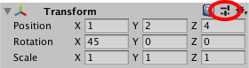
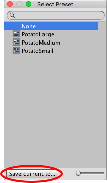

Use Presets to reuse property settings across multiple componentsA functional part of a GameObject. A GameObject can contain any number of components. Unity has many built-in components, and you can create your own by writing scripts that inherit from MonoBehaviour. More info
See in Glossary and assetsAny media or data that can be used in your game or project. An asset may come from a file created outside of Unity, such as a 3D model, an audio file or an image. You can also create some asset types in Unity, such as an Animator Controller, an Audio Mixer or a Render Texture. More info
See in Glossary.
With Presets you can also specify default settings for new components and the import settings for assets. Use the Preset Manager to view and choose the Presets to use for default settings.
Use Presets to streamline your team’s workflows. You can even use Presets to specify settings for Settings Managers, including the Preset Manager itself. Use this feature to configure a project then export it as a custom package. Your team members can import this package into their projects.
Presets are an Editor-only feature. You can support Presets in your extensions to the Unity Editor. Presets are not available at run time in the Unity Player.
You use Presets like copying and pasting. But instead of copying settings to the clipboard, you save them to use later. And like pasting settings, applying a Preset to an item changes the properties in the item.
For example, select a GameObject to edit the properties of its RigidBodyA component that allows a GameObject to be affected by simulated gravity and other forces. More info
See in Glossary component. Save these settings to a Preset. Then apply the Preset to RigidBody components in other GameObjectsThe fundamental object in Unity scenes, which can represent characters, props, scenery, cameras, waypoints, and more. A GameObject’s functionality is defined by the Components attached to it. More info
See in Glossary. The other components in the GameObjects are not affected; the Preset only applies its settings to the RigidBody component.
You can store Presets in the Assets folder of your project. Use the Project window to view and select Presets to edit in the InspectorA Unity window that displays information about the currently selected GameObject, Asset or Project Settings, alowing you to inspect and edit the values. More info
See in Glossary.
Use the Select Preset window to save property settings.
Tip: You can also save a Preset while in Play Mode.
To save settings to a Preset:
Select the GameObject, asset import settings, or Settings Manager from which you want to reuse settings.
In the Inspector window, edit the properties.
Click the Preset icon at the top-right of the Inspector window.

In the Select Preset window, click Save current to.

A File Save dialog appears.
Choose the location of your new Preset, enter its name, and click Save.
Apply a saved Preset with the Select Preset window or by dragging and dropping a Preset from the Project window onto the GameObject.
Note: Applying a Preset copies properties from the Preset to the item. It doesn’t link the Preset to the item. Changes you make to the Preset do not affect the items you have previously applied the Preset to.
To apply a Preset to a Settings Manager, an existing component, or import settings for an asset:
Select the Settings Manager, GameObject, or asset import settings that you want to apply a Preset to.
In the Inspector, click the Preset icon.
In the Select Preset window, search for and select the Preset to apply.
Selecting the Preset applies it to the component, asset, or Settings Manager.
Close the Select Preset window.
Drag and drop a Preset from the Project window to apply properties to a component in a GameObject:
Drop the Preset on an empty spot in the Hierarchy window. Unity creates a new, empty GameObject and adds a component with properties copied from the Preset.
Drop the Preset on an existing GameObject in the Hierarchy. Unity adds a new component and copies properties from the Preset.
Drop the Preset on the Inspector window at the end of a GameObject. Unity adds a new component and copies properties from the Preset.
Drop the Preset on the Inspector onto the title of an existing component. Unity copies properties from the Preset.
You can save and apply Presets for Animation State nodes. However, the transitionsThe blend from one state to another in a state machine, such as transitioning a character from a walk to a jog animation. Transitions define how long the blend between states should take, and the conditions that activate the blend. More info
See in Glossary in the Preset are shared among Presets and the nodes that you apply the Preset to. For example, you apply a Preset to two different nodes in the Animator WindowThe window where the Animator Controller is visualized and edited. More info
See in Glossary. In the Inspector window, you edit the settings for one of the transitions in the first node. Your change also appears in the other node and in the Preset.
You can save Presets for asset [import settings](# Presets
Use Presets to reuse property settings across multiple components and assets.
With Presets you can also specify default settings for new components and the import settings for assets. Use the Preset Manager to view and choose the Presets to use for default settings.
Use Presets to streamline your team’s workflows. You can even use Presets to specify settings for Settings Managers, including the Preset Manager itself. Use this feature to configure a project then export it as a custom package. Your team members can import this package into their projects.
Presets are an Editor-only feature. You can support Presets in your extensions to the Unity Editor. Presets are not available at run time in the Unity Player.
You use Presets like copying and pasting. But instead of copying settings to the clipboard, you save them to use later. And like pasting settings, applying a Preset to an item changes the properties in the item.
For example, select a GameObject to edit the properties of its RigidBody component. Save these settings to a Preset. Then apply the Preset to RigidBody components in other GameObjects. The other components in the GameObjects are not affected; the Preset only applies its settings to the RigidBody component.
You can store Presets in the Assets folder of your project. Use the Project window to view and select Presets to edit in the Inspector.
Use the Select Preset window to save property settings.
Tip: You can also save a Preset while in Play Mode.
To save settings to a Preset:
Select the GameObject, asset import settings, or Settings Manager from which you want to reuse settings.
In the Inspector window, edit the properties.
Click the Preset icon at the top-right of the Inspector window.
In the Select Preset window, click Save current to.
A File Save dialog appears.
Choose the location of your new Preset, enter its name, and click Save.
Apply a saved Preset with the Select Preset window or by dragging and dropping a Preset from the Project window onto the GameObject.
Note: Applying a Preset copies properties from the Preset to the item. It doesn’t link the Preset to the item. Changes you make to the Preset do not affect the items you have previously applied the Preset to.
To apply a Preset to a Settings Manager, an existing component, or import settings for an asset:
Select the Settings Manager, GameObject, or asset import settings that you want to apply a Preset to.
In the Inspector, click the Preset icon.
In the Select Preset window, search for and select the Preset to apply.
Selecting the Preset applies it to the component, asset, or Settings Manager.
Close the Select Preset window.
Drag and drop a Preset from the Project window to apply properties to a component in a GameObject:
Drop the Preset on an empty spot in the Hierarchy window. Unity creates a new, empty GameObject and adds a component with properties copied from the Preset.
Drop the Preset on an existing GameObject in the Hierarchy. Unity adds a new component and copies properties from the Preset.
Drop the Preset on the Inspector window at the end of a GameObject. Unity adds a new component and copies properties from the Preset.
Drop the Preset on the Inspector onto the title of an existing component. Unity copies properties from the Preset.
You can save and apply Presets for Animation State nodes. However, the transitions in the Preset are shared among Presets and the nodes that you apply the Preset to. For example, you apply a Preset to two different nodes in the Animator Window. In the Inspector window, you edit the settings for one of the transitions in the first node. Your change also appears in the other node and in the Preset.
You can save Presets for asset import settings. However, applying a Preset to import settings does not affect the cross-platform settings. To apply a Preset so that it includes cross-platform settings, set the Preset as a default then use the Reset command.
You can also use a script to apply a Preset to an asset based on the location of the asset in the Project window.
Use the Inspector window to edit a Preset asset.
Note: Changing the properties in a Preset does not update the items that you applied the Preset to. For example, if you apply a Preset for a RigidBody component to a GameObject, then edit the Preset, the settings in the RigidBody component do not change.
2017–03–27 Page published with limited editorial review
New feature in 2018.1 NewIn20181
Did you find this page useful? Please give it a rating: